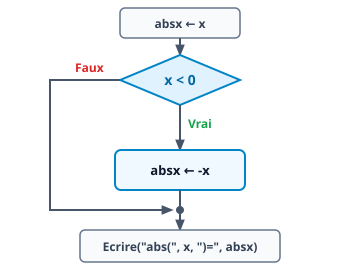
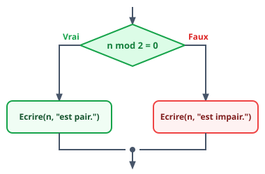
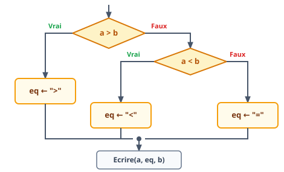
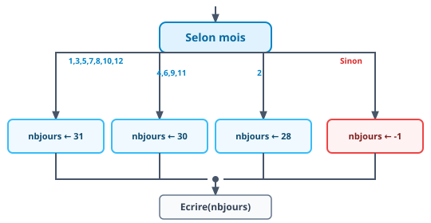
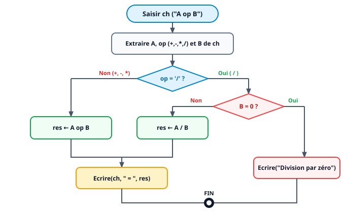
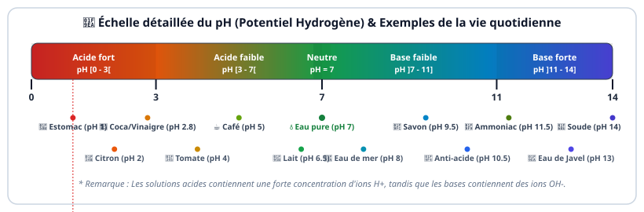
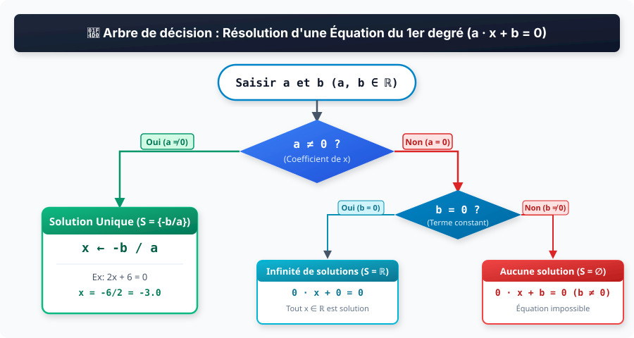
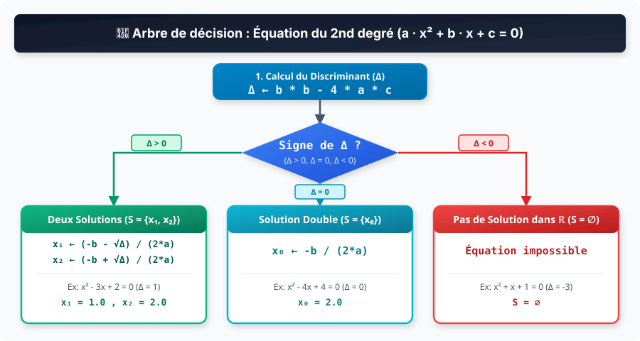
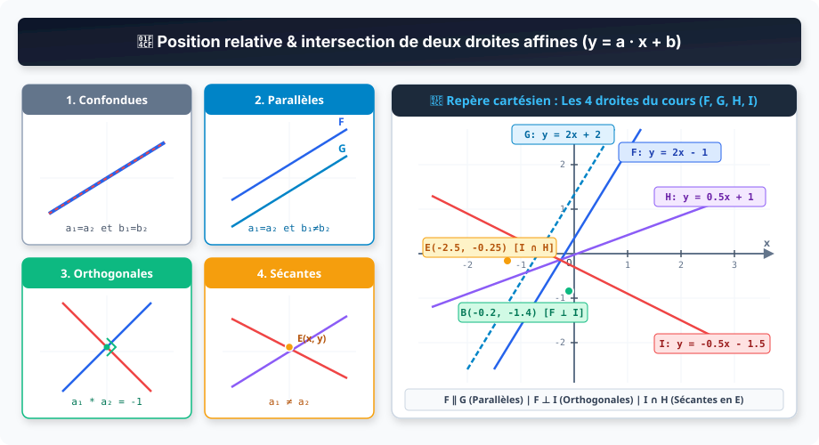

Souvent, l'exécution d'un traitement dépend d'une condition. Dans ce cas, on utilise les structures
conditionnelles.
Ces dernières se déclinent, en fonction du nombre de conditions et de traitements, en trois formes :
réduite, alternative (ou complète) et généralisée.
Lorsque le traitement dépend d'une valeur de type scalaire (entier, caractère ou booléen), on peut utiliser
une structure de contrôle conditionnelle à choix multiples.
📐 Schéma de principe d'une Structure Conditionnelle
2. Forme réduite
Une structure conditionnelle à forme réduite admet un seul traitement qui sera exécuté uniquement si la
condition est vraie.

📐 Algorithme
🐍 Python
// Valeur absolue d'un nombre x
absx ← x
Si x < 0 Alors
absx ← -x
Fin Si
Ecrire("abs(", x, ")=", absx)
# Valeur absolue d'un nombre x
absx = x
if x < 0:
absx = -x
print("abs(", x, ")=", absx)
3. Forme alternative
Une structure conditionnelle à forme alternative admet deux traitements différents :
Le premier traitement est exécuté uniquement si la condition est vraie.
Le second traitement est exécuté uniquement si la condition est fausse.

📐 Algorithme
🐍 Python
// Parité d'un nombre n
Si n mod 2 = 0 Alors
Ecrire(n, "est pair.")
Sinon
Ecrire(n, "est impair.")
Fin Si
# Parité d'un nombre n
if n % 2 == 0:
print(n, "est pair.")
else:
print(n, "est impair.")
4. Forme généralisée
Une structure conditionnelle simple à forme généralisée admet trois traitements différents ou plus qui seront
exécutés en fonction de plusieurs conditions.

📐 Algorithme
🐍 Python
// Comparaison entre deux nombres
Si a > b Alors
eq ← ">"
Sinon Si a < b Alors
eq ← "<"
Sinon
eq ← "="
Fin Si
Ecrire(a, eq, b)
# Comparaison entre deux nombres
if a > b:
eq = ">"
elif a < b:
eq = "<"
else:
eq = "="
print(a, eq, b)
5. Structure à choix multiples
Une structure de contrôle conditionnelle à choix multiples est utilisée de préférence lorsque le traitement
dépend uniquement d'une ou de plusieurs valeurs d'un sélecteur scalaire.

📐 Algorithme
🐍 Python
// Calcul du nombre de jours
Selon mois
1, 3, 5, 7, 8, 10, 12: nbjours ← 31
4, 6, 9, 11: nbjours ← 30
2: nbjours ← 28
Sinon nbjours ← -1
Fin Selon
Ecrire(nbjours)
# Calcul du nombre de jours
match mois:
case 1|3|5|7|8|10|12: nbjours = 31
case 4|6|9|11: nbjours = 30
case 2: nbjours = 28
case _: nbjours = -1
print(nbjours)
Exercices Interactifs
Exercice 1 – QCM 1
Cocher la ou les bonnes réponses pour chaque question.
1. Une personne est considérée majeure si son âge dépasse les 18 ans.
La condition qui peut compléter l'algorithme ci-dessous est :
Si condition Alors
Ecrire("Vous êtes majeur(e)")
Sinon
Ecrire("Vous êtes mineur(e)")
Fin Si
💡 Indice
Pensez à la comparaison directe avec le seuil 18, et observez le résultat d'un quotient lorsqu'un nombre
est supérieur ou égal à 18.
2. La condition qu'on peut utiliser pour vérifier si la longueur d'une
chaîne de caractères ch est multiple de 3 est :
💡 Indice
Un nombre est multiple de 3 si le reste de la division entière par 3 (mod 3) vaut 0.
Rappelez-vous aussi qu'une condition logique et sa double négation sont équivalentes.
3. Pour déterminer si un entier n est pair ou impair,
quelle(s) séquence(s) est/sont correcte(s) ?
💡 Indice
Examinez comment chaque séquence gère l'affectation de nat : soit avec une valeur par
défaut modifiée si impair, soit avec une structure Si...Sinon complète basée sur un test
booléen.
4. Afin de former l'entier le plus grand n2 formé par les
chiffres d'un entier n de deux chiffres :
💡 Indice
Cherchez les algorithmes qui comparent correctement le premier et le second chiffre pour former le plus
grand nombre possible (soit par calcul arithmétique div/mod, soit par
manipulation de chaîne).
5. Dans l'algorithme ci-dessous, pour que le résultat final de
n soit égal à 13, n initial peut être égal à :
Si n mod 2 = 0 Alors
n ← n div 2
Sinon
n ← 3 * n + 1
Fin Si
💡 Indice
Évaluez l'instruction conditionnelle pour chaque valeur candidate : si n est pair on divise
par 2 (n div 2), si n est impair on applique 3 * n + 1.
6. À la suite de l'exécution du programme ci-dessous, on obtient le
résultat 12000. La valeur de np est alors :
np = int(input("Nombre de pages ? "))
if np < 20:
pu = 200
elif np < 100:
pu = 150
else:
pu = 100
res = pu * np
print(res)
💡 Indice
Pour chaque valeur de np, déterminez d'abord le prix unitaire pu correspondant
selon les tranches (<20, <100, ≥100), puis calculez le produit pu * np pour
vérifier s'il vaut 12000.
Exercice 2 – QCM 2
Cocher la ou les bonnes réponses pour chaque question.
1. La valeur finale de n1 en fonction de la valeur de
n est :
n ← aléa(5, 15)
Si n > 10 Alors
n1 ← n - 10
Sinon
n1 ← -n
Fin Si
Ecrire(n, n1)
💡 Indice
Si n = 7 (≤ 10), la branche Sinon s'exécute (n1 = -n). Si
n = 12 (> 10), la branche Si s'exécute (n1 = n - 10).
2. Sachant que b > c, que b < a, et
que la valeur affichée est 15, les valeurs de a, b et c sont :
Si a > b et a > c Alors
Ecrire(a)
Sinon Si b > c Alors
Ecrire(b)
Sinon
Ecrire(c)
Fin Si
💡 Indice
Analysez les inégalités données (b > c et b < a), qui impliquent
a > b > c. La première condition Si a > b et a > c sera donc vraie
et affichera la valeur de a.
3. L'affichage de la séquence suivante est :
n ← 3
g ← "F"
Si n ≠ 0 Alors
Ecrire("Bonjour!")
Si g = "H" Alors
Ecrire("Messieurs")
Sinon
Ecrire("Mes dames")
Fin Si
Fin Si
💡 Indice
Évaluez d'abord la condition externe n ≠ 0 (3 ≠ 0 est Vrai), puis la condition
imbriquée g = "H" ("F" = "H" est Faux, ce qui exécute le Sinon).
4. Les valeurs finales des variables a et b
sont :
a ← 12
b ← 5
Si a mod b = 0 Alors
a ← a / b
Sinon Si a - b > 5 Alors
b ← b + 2
Sinon
a ← a - 3
Fin Si
Ecrire(a, " et ", b)
💡 Indice
Calculez d'abord 12 mod 5 (reste 2 ≠ 0). Passez au Sinon Si : calculez
12 - 5 = 7. Comme 7 > 5 est Vrai, la variable b est incrémentée de 2.
5. Les valeurs finales des variables x et y
sont :
x ← 8
y ← 3
Si x < y Alors
x ← x + 2
Sinon Si x > y + 2 Alors
y ← y + 5
Sinon
x ← x - y
Fin Si
Ecrire(x, y)
💡 Indice
Testez la première condition 8 < 3 (Faux). Testez la seconde 8 > (3 + 2)
(8 > 5 est Vrai), ce qui modifie la valeur de y en lui ajoutant 5.
Exercice 3 – QCM 3 (Relier les expressions booléennes)
Relier chacune des descriptions numérotées (1 à 8) à l'expression booléenne correspondante
(a à h).
📋 Liste des expressions booléennes disponibles :
a.test ← a mod 15 = 0
b.test ← non (b mod a = 0)
c.test ← (a mod 2 = 0) et (a div 100 mod 2 ≠ 0)
d.test ← 10 ≤ a et a < 100
e.test ← (a mod 3 = 0 ou a mod 5 = 0) et (a mod 15 ≠ 0)
f.test ← 0 ≤ a et a ≤ 1
g.test ← a mod 3 = 0 ou a mod 5 = 0
h.test ← (a mod 10 < 5) et (a mod 100 div 10 < 5)
1. Vérifier si un réel a est compris entre 0 et 1 :
💡 Indice
Recherchez l'expression qui encadre la valeur a avec des inégalités entre la borne
inférieure 0 et la borne supérieure 1.
2. Vérifier si un entier positif a est composé de deux
chiffres :
💡 Indice
Un entier positif a deux chiffres s'il est supérieur ou égal à 10 et strictement inférieur à 100.
3. Vérifier si un entier positif a est divisible par 3
et 5 :
💡 Indice
Si un nombre est divisible par 3 ET par 5 (premiers entre eux), il est alors divisible par leur
produit 15.
4. Vérifier si un entier positif a est divisible par 3
ou 5 :
💡 Indice
Utilisez l'opérateur logique ou pour vérifier si le reste par 3 est nul ou si le reste
par 5 est nul.
5. Vérifier si un entier positif a est divisible par 3
ou 5 et non pas les deux en même temps :
💡 Indice
Combinez la divisibilité par 3 ou 5 avec la condition explicite que l'entier N'EST PAS divisible par
15 (a mod 15 ≠ 0).
6. Vérifier si un entier positif b n'est pas divisible
par un deuxième entier positif a :
💡 Indice
Recherchez l'expression qui applique la négation non à l'affirmation de divisibilité
b mod a = 0.
7. Vérifier si le chiffre des centaines d'un entier a
de 4 chiffres est impair et que son chiffre d'unités est pair :
💡 Indice
L'unité s'évalue par a mod 2 = 0 (pair), et le chiffre des centaines par
(a div 100) mod 2 ≠ 0 (impair).
8. Vérifier si le chiffre des unités et le chiffre des dizaines
d'un entier a sont inférieurs à 5 :
💡 Indice
Le chiffre des unités est a mod 10 et celui des dizaines est
a mod 100 div 10.
Exercice 4 – Exécution Manuelle (Analyse des formes conditionnelles)
Pour chaque algorithme ci-dessous : observez la séquence, identifiez la traduction Python,
déterminez le nombre de conditions, la forme de la structure et son rôle principal.
📌 Algorithme 1 :
📐 Algorithme
🐍 Traduction Python
a ← aléa(1, 10)
b ← aléa(1, 10)
Si a > b Alors
t ← a ; a ← b ; b ← t
Fin Si
Ecrire(a, b)
import random
a = random.randint(1, 10)
b = random.randint(1, 10)
if a > b:
t = a; a = b; b = t
print(a, b)
⚙️ Analyse de l'Algorithme 1 :
💡 Indice
Observez ce qui arrive lorsque a > b : les valeurs de a et b
sont permutées grâce à la variable temporaire t. En fin d'exécution, a est
toujours inférieur ou égal à b.
📌 Algorithme 2 :
📐 Algorithme
🐍 Traduction Python
n ← aléa(1, 20)
Si n mod 2 = 0 Alors
Ecrire(n, "est pair.")
Sinon
Ecrire(n, "est impair.")
Fin Si
import random
n = random.randint(1, 20)
if n % 2 == 0:
print(n, "est pair.")
else:
print(n, "est impair.")
⚙️ Analyse de l'Algorithme 2 :
💡 Indice
Examinez le test n mod 2 = 0 : le reste de la division par 2 détermine si un nombre entier
est pair ou impair.
📌 Algorithme 3 :
📐 Algorithme
🐍 Traduction Python
v ← aléa(0, 2)
Si v = 0 Alors
car ← chr(aléa(48, 57))
Sinon Si v = 1 Alors
car ← chr(aléa(65, 90))
Sinon
car ← chr(aléa(97, 122))
Fin Si
Ecrire(car)
import random
v = random.randint(0, 2)
if v == 0:
car = chr(random.randint(48, 57))
elif v == 1:
car = chr(random.randint(65, 90))
else:
car = chr(random.randint(97, 122))
print(car)
⚙️ Analyse de l'Algorithme 3 :
💡 Indice
Rappelez-vous les intervalles de la table ASCII : 48-57 pour les chiffres, 65-90 pour les lettres
majuscules et 97-122 pour les lettres minuscules.
Exercice 5 – Signe & Parité
Écrire l'algorithme d'un programme qui saisit un entier n, puis affiche son
signe (positif ou négatif) et sa parité (pair ou impair).
Un nombre positif de 3 chiffres est dit cubique (ou nombre d'Armstrong)
s'il est égal à la somme des cubes de ses chiffres : $$N = c^3 + d^3 + u^3$$
📐 Décomposition d'un entier à 3 chiffres (N ∈ [100, 999]) :
Centaines (c)
c ← N div 100
Ex: 153 div 100 = 1
Dizaines (d)
d ← (N div 10) mod 10
Ex: (153 div 10) mod 10 = 5
Unités (u)
u ← N mod 10
Ex: 153 mod 10 = 3
💡 Indice d'extraction des chiffres
Conseil : Pour extraire le chiffre des centaines d'un entier à 3 chiffres, utilisez
N div 100. Pour les dizaines, combinez (N div 10) mod 10. Pour les unités,
utilisez N mod 10. Pour calculer les cubes, effectuez la multiplication directe :
c * c * c + d * d * d + u * u * u (l'utilisation de ** n'étant pas autorisée à ce
niveau).
🧪 Testeur interactif de nombre cubique :
Nombres cubiques de 3 chiffres à tester :
Exercice 7 – Formes d'une structure conditionnelle
Analyse des structures conditionnelles, réécriture sous forme réduite et évaluation
d'expressions avec codes ASCII.
📌 Question 1 :
Soit l'instruction conditionnelle suivante :
Si (x > 1) et (x ≤ 12) Alors
y ← x + 1
Sinon
y ← x - 1
Fin Si
Proposition A
y ← x - 1
Si (x > 1) et (x ≤ 12) Alors
y ← x + 1
Fin Si
Proposition B
y ← x + 1
Si (x > 1) et (x ≤ 12) Alors
y ← x - 1
Fin Si
Proposition C
Si (x > 1) et (x ≤ 12) Alors
y ← x + 1
y ← x - 1
Fin Si
💡 Indice Q1
Pour réécrire sous forme réduite une structure Si C Alors A Sinon B, affectez d'abord la
valeur du Sinon (B) par défaut, puis modifiez-la dans un Si C Alors (A).
📌 Question 2 :
Soit la séquence algorithmique suivante (sachant que ord("A") = 65 et
ord("a") = 97) :
Si "a" ≤ C et C ≤ "z" Alors
P ← ord(C) - 96
Sinon
P ← ord(C) - 64
Fin Si
💡 Indice Q2
Exécutez à la main le bloc Sinon pour 'A' (car 'A' n'est pas une
lettre minuscule) et le bloc Si pour 'c'. Rappelez-vous que la fonction
ord() retourne le code ASCII du caractère.
Exercice 8 – Type d'un caractère ASCII
Écrire l'algorithme d'un programme qui saisit un caractère, puis détermine et affiche son
type exact (Lettre Majuscule, Lettre Minuscule, Chiffre ou Symbole).
📋 Plages des codes ASCII et conditions d'appartenance :
Majuscule
"A" ≤ c ≤ "Z"
ASCII 65 à 90
Minuscule
"a" ≤ c ≤ "z"
ASCII 97 à 122
Chiffre
"0" ≤ c ≤ "9"
ASCII 48 à 57
Symbole
Sinon
Autres caractères
💡 Indices & Structures possibles
Deux approches algorithmiques sont possibles :
Forme généralisée :Si "A" ≤ c et c ≤ "Z" Alors ... Sinon Si "a" ≤ c et c ≤ "z" Alors ... Sinon Si "0" ≤ c et c ≤ "9" Alors ... Sinon ... Fin Si
Structure à choix multiples :Selon c Faire "A".."Z" : ... "a".."z" : ... "0".."9" : ... Sinon : ... Fin Selon
🧪 Testeur et analyseur de caractère ASCII :
Exemples rapides à tester :
Exercice 9 – Calculatrice d'expression (A op B)
Écrire l'algorithme d'un programme qui saisit une expression de la forme
A op B dans une chaîne nommée ch (avec A et B deux entiers
relatifs et op l'un des opérateurs +, -, * ou
/), puis calcule et affiche le résultat (en prévoyant le cas de division par zéro).
📊 Représentation graphique : Organigramme d'évaluation de "A op B" :

💡 Indices de traitement de la chaîne
Conseils pour l'extraction et l'évaluation :
Recherchez la position p de l'opérateur dans la chaîne ch (avec
pos("+", ch), pos("-", ch), etc.).
Extrayez les sous-chaînes de A (de la position 1 à p-1) et de B
(de la position p+1 à long(ch)), puis convertissez-les en entiers avec
valeur().
Traitez le calcul avec une structure conditionnelle Selon op Faire ou
Si...Sinon Si en vérifiant systématiquement Si op = "/" et B = 0 pour éviter
l'erreur de division par zéro.
🧪 Testeur interactif d'expression (ch = "A op B") :
Exemples du manuel à tester :
Exercice 10 – Potentiel Hydrogène (pH)
Écrire l'algorithme d'un programme nommé Nature_Liquide qui permet de saisir
la valeur du pH (Potentiel Hydrogène) d'une solution pour afficher sa nature exacte : Acide
fort, Acide faible, Neutre, Base faible ou
Base forte.
📊 Représentation graphique : Échelle de pH (0 à 14) et Zones de
classification :

💡 Indices d'organisation des conditions
Conseils pour la rédaction de l'algorithme :
Pensez à traiter en premier le cas d'une saisie invalide (lorsque la valeur du pH
n'est pas comprise dans l'intervalle $[0, 14]$).
Pour classifier les 5 natures de solutions (Acide fort, Acide faible, Neutre, Base faible, Base
forte), utilisez une structure conditionnelle généralisée
(Si...Sinon Si...Sinon Si...Sinon...Fin Si) en comparant la valeur du pH aux seuils
successifs $3$, $7$ et $11$.
🧪 Testeur et analyseur de pH (Nature_Liquide) :
Exemples de produits de la vie quotidienne à tester
:
Exercice 11 – Évaluation d'une structure conditionnelle
Quelles sont les valeurs finales des variables A et B après
l'exécution de chaque bloc d'instructions ?
📌 Bloc 1 :
A ← 3
B ← 1
Si (A > 2) et (B < 1) Alors
B ← 2
Fin Si
A =
B =
💡 Indice Bloc 1
Évaluez la condition composée (3 > 2) et (1 < 1). La seconde comparaison
1 < 1 est-elle vraie ou fausse ?
📌 Bloc 2 :
A ← 2
Si (Non (A < 2) ou (A = 2)) Alors
B ← 3
Sinon
B ← 1
Fin Si
A =
B =
💡 Indice Bloc 2
Calculez d'abord 2 < 2 (Faux). Donc Non(Faux) donne Vrai. L'opérateur
ou est donc satisfait.
📌 Bloc 3 :
A ← 2
A ← A div 3
Si A = 2 Alors
B ← 3
Sinon Si A = 0 Alors
B ← 2
Sinon
B ← 1
Fin Si
A =
B =
💡 Indice Bloc 3
Calculez d'abord la division entière 2 div 3. Quelle valeur prend A ?
Suivez ensuite la branche conditionnelle correspondante.
Exercice 12 – Année bissextile
Écrire l'algorithme d'un programme qui saisit une année a puis détermine et
affiche si elle est bissextile (366 jours, mois de février de 29 jours) ou non (365 jours).
📋 Règle de définition :
Une année est bissextile si elle est divisible par 4 et non divisible par
100, OU si elle est divisible par 400.
💡 Indice de structure conditionnelle
Conseil : Réfléchissez aux trois opérations de divisibilité avec l'opérateur
mod (reste égal à 0 ou différent de 0) et combinez-les avec une structure alternative
Si...Sinon...Fin Si.
🧪 Testeur interactif d'année bissextile :
Exemples à tester :
Exercice 13 – Salutations (Analyse & Réécriture avec Selon)
Soit la séquence algorithmique ci-dessous permettant d'afficher une salutation selon
l'heure h (comprise entre 0 et 23) :
📐 Algorithme de départ (Forme généralisée) :
Si h < 12 Alors
Ecrire("Bonjour")
Sinon Si h < 18 Alors
Ecrire("Bon Après-midi")
Sinon Si h < 21 Alors
Ecrire("Bonsoir")
Sinon
Ecrire("Bonne nuit")
Fin Si
📌 Question 1 : Déterminer l'intervalle de temps (0..23) pour chaque
message
💡 Indice Q1
L'heure h est un entier de 0 à 23. Si h < 12 est Vrai, la dernière valeur
entière possible est 11 (donc 0..11). Pour h < 18 en arrivant au premier
Sinon Si, h est au moins égal à 12 et au plus égal à 17.
📌 Question 2 : Réécrire l'algorithme en utilisant la structure
Selon
Proposition A
Selon h Faire
0..11 : Ecrire("Bonjour")
12..17 : Ecrire("Bon Après-midi")
18..20 : Ecrire("Bonsoir")
21..23 : Ecrire("Bonne nuit")
Fin Selon
Proposition B
Selon h Faire
0..12 : Ecrire("Bonjour")
12..18 : Ecrire("Bon Après-midi")
18..21 : Ecrire("Bonsoir")
21..24 : Ecrire("Bonne nuit")
Fin Selon
Proposition C
Selon h Faire
h < 12 : Ecrire("Bonjour")
h < 18 : Ecrire("Bon Après-midi")
h < 21 : Ecrire("Bonsoir")
Sinon : Ecrire("Bonne nuit")
Fin Selon
💡 Indice Q2
Dans une structure Selon, les cas de sélection pour une variable entière doivent être des
valeurs ou des plages d'intervalles réels disjoints (format borne1..borne2 sans
chevauchement des bornes).
🧪 Testeur interactif de salutation selon l'heure (h) :
Raccourcis d'heures à tester :
Exercice 14 – Score d'un match
Écrire l'algorithme d'un programme qui saisit les noms de deux équipes de football
(eq1, eq2) et leurs scores respectifs (sc1, sc2), puis
affiche l'équipe gagnante ou la mention "Match nul" en cas d'égalité.
💡 Indice de structure conditionnelle
Conseil : Pensez à comparer les deux scores sc1 et sc2 avec une
structure généralisée (Si...Sinon Si...Sinon...Fin Si). Déterminez les trois cas possibles :
victoire de la première équipe, victoire de la seconde, ou égalité parfaite.
⚽ Testeur interactif de résultat de match :
Exemples du manuel de cours :
Exercice 15 – Équation du 1er degré
Écrire l'algorithme d'un programme qui saisit les coefficients réels a et
b d'une équation du premier degré : $$a \cdot x + b = 0$$ puis calcule et affiche l'ensemble des
solutions $S$ dans $\mathbb{R}$.
📊 Représentation graphique : Arbre de décision & cas de
résolution ($a \cdot x + b = 0$) :

💡 Indice de structure conditionnelle
Conseil : Analysez d'abord le coefficient a :
Si a ≠ 0, l'équation admet une unique solution x = -b / a.
Si a = 0, la résolution dépend du terme constant b : si b = 0,
toute valeur réelle de $x$ est solution ($S = \mathbb{R}$), sinon l'équation est impossible ($S =
\emptyset$).
🧪 Testeur interactif de résolution ($a \cdot x + b = 0$) :
Exemples de cas à tester :
Exercice 16 – Nature d'un triangle
D'après le théorème de l'inégalité triangulaire, la somme des longueurs de deux côtés d'un
triangle doit toujours être supérieure à celle du troisième côté. Écrire l'algorithme d'un programme qui
saisit les longueurs des 3 côtés a, b et c, puis détermine et affiche
sa nature exacte.
Testez d'abord la validité d'existence du triangle avec l'inégalité triangulaire :
(a + b > c) et (a + c > b) et (b + c > a).
Pour les cas de figure :
Équilatéral : 3 côtés égaux (a = b et b = c).
Rectangle : théorème de Pythagore avec multiplications directes (a*a + b*b = c*c,
etc.).
Isocèle : 2 côtés égaux (a = b ou a = c ou b = c).
🔺 Testeur interactif de la nature d'un triangle (a, b, c) :
Exemples du manuel de cours :
Exercice 17 – Équation du 2ème degré
Écrire l'algorithme d'un programme qui saisit les 3 coefficients réels a ($a
\neq 0$), b et c d'une équation du second degré : $$a \cdot x^2 + b \cdot x + c =
0$$ puis calcule le discriminant $\Delta = b^2 - 4ac$ et affiche l'ensemble des solutions $S$ dans
$\mathbb{R}$.
📊 Représentation graphique : Arbre de décision du Discriminant
($\Delta = b^2 - 4ac$) :

💡 Indice de structure conditionnelle
Conseil :
Calculez le discriminant avec la multiplication directe : delta ← b * b - 4 * a * c
(l'utilisation de ** n'étant pas autorisée).
Examinez le signe de delta avec une structure généralisée
(Si delta > 0 Alors ... Sinon Si delta = 0 Alors ... Sinon ... Fin Si).
⚡ Testeur interactif de résolution ($a \cdot x^2 + b \cdot x + c = 0$) :
Exemples de cas du manuel :
Exercice 18 – Les alcools (Visualiseur 3D & Calculateur Molaire)
La formule chimique générale de la famille des alcools est $C_n H_{2n+2} O$. Écrire l'algorithme d'un programme qui saisit une formule brute, vérifie s'il s'agit d'un alcool, puis calcule sa masse molaire ($C=12.01$, $H=1.008$, $O=16.00\text{ g/mol}$) et identifie son nom.
💡 Indice d'analyse et calcul molaire
Conseil pour la logique algorithmique :
Extrayez le nombre d'atomes de Carbone $n$ et d'Hydrogène $h$ à partir de la chaîne (ex: C2H6O).
Vérifiez la condition d'appartenance à la famille des alcools : h = 2 * n + 2 et présence de l'atome d'Oxygène.
Si la condition est vraie :
Calculez la masse molaire : M ← n * 12.01 + h * 1.008 + 16.00.
Identifiez le nom selon $n$ ($1 \rightarrow$ Méthanol, $2 \rightarrow$ Éthanol, $3 \rightarrow$ Propanol, $4 \rightarrow$ Butanol, $5 \rightarrow$ Pentanol, $6 \rightarrow$ Hexanol, $n \ge 7 \rightarrow$ Alcool à longue chaîne).
🧪 Visualiseur 3D de la molécule d'alcool : Éthanol (C₂H₆O)
Carbone (C)
Oxygène (O)
Hydrogène (H)
🖱️ Faites glisser pour tourner la molécule en 3D
Formules du manuel à modéliser :
Exercice 19 – Intersection de deux droites affines
Une droite du plan est décrite par une équation affine de la forme $y = a \cdot x + b$. Écrire l'algorithme d'un programme qui saisit les coefficients réels $a_1, b_1$ et $a_2, b_2$ de deux droites $D_1$ et $D_2$, puis détermine si elles sont confondues, parallèles, orthogonales ou sécantes en calculant les coordonnées de leur point d'intersection $(x, y)$.
📊 Représentation graphique : Position relative de deux droites affines & repère cartésien :

💡 Indice de structure conditionnelle & géométrique
Conseil pour la logique algorithmique :
Comparez les pentes $a_1$ et $a_2$ :
Si a1 = a2 :
Si b1 = b2 $\rightarrow$ Droites confondues (infinité d'intersections).